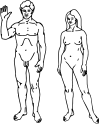
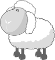

HomozygosityMapper
Documentation
This software is being further developed. You might occasionally discover new features that haven't yet made it into the manual. We apologise in advance if this causes confusion, but we want to make new features available as soon as possible.
HomozygosityMapper has recently been extended to other species beyond humans. While we could import a variety of chips and provide the infrastructure to upload genotypes created with them, we could not test all of them - simple due to the lack ofthe genotypes. If you cannot upload your data or want other species or chips to be included, please send an email to dominik.seelow (at) charite.de.
| create a profile | web interface |
You can use HomozygosityMapper without a personal account. However, with a user profile, access to your data will be facilitated and you can also change the access restrictions (only you, everyone, selected co-operation partners) at any time.
It is not possible to choose a user name that is already in use, HomozygosityMapper will raise an error in such cases.
You should always enter a valid e-mail address because we will inform you in advance when major changes to the website are
planned or when we have to archive old projects due to disk space limitations.
If you forgot your password, please send us an e-mail. Lost passwords will only be sent to the email address entered here.
After you have created a password, you will be automatically logged in with these data. If you return to HomozygosityMapper, please click on the login link on the homepage and enter your credentials.
| select a species |
If you want to upload, analyse, or view genotypes of any non-human species or want to switch to another species, simply click on the correct species in the panel on the left top of the homepage.
So far, HomozygosityMapper covers the following species:
|  | |||
| Humans Homo sapiens |
Cattle Bos taurus |
Dogs Canis lupus |
Horses Equus ferus caballus |
|  | |||
| Mice Mus musculus |
Rats Rattus norvegicus |
Sheep Ovis aries |
Please see contributions for copy rights.
| upload genotypes | web interface |
Humans
|
Cattle
|
Mice
|
| If your specied or chip is not listed here, please send us an e-mail. | ||
To import the genotypes, specify a new project name under new project name or select one of your existing projects (add to existing project) if you want to add new genotypes. Adding genotypes to an existing project is also the solution for projects run on chip sets consisting of more than one chip (see 'mixing' below).
You can also decide whether or not you want to make the project public (checkbox access restriction).
If you are logged in with a personal account, this setting can be changed at any time and you can also share your data with selected
collaborators (via the 'grant access to your data' link on the homepage). If you upload your data as guest, you will receive special
URLs for access-restricted data; the data will be invisible to anyone else. Without the URL, you will not be able to access your data again.
Also, it is not possible to use URL-protected genotypes in GeneDistiller to rank candidate genes by their homozyosity scores.
Please note that data uploaded as guest will be deleted after two month to save disk space.
We hence recommend to create an account, especially if you want to
keep your data private. Personal accounts are completely free.
After choosing the project, you have to select the respective genotyping chip or 'VCF' (drop-down menu chip), point to the genotype file (genotype file) and eventually submit the data.
SNP genotype files must be tabular with the samples as columns and the SNPs as rows, they can (or rather should) also be zipped or gzipped. Lines starting with the number sign (#) will be ignored. Sample files to demonstrate the allowed formats can be found here. The genotypes must be written in standard Affymetrix or Illumina notation, i.e. (NoCall, AA, AB, BB or -1, 0, 1, 2 for Affymetrix and --, AA, AB, BB for Illumina, respectively).
VCF genotype files must combine the genotypes of all samples in one file (see below). A short description and a sample VCF file
can be obtained from the file formats page.
You can choose whether you want to consider either all variations from the RefSeq (use... only variations from RefSeq)
in your file or all positions known to bear SNPs (use... only known variants) or both.
If you work with a project containing control samples (i.e. healthy relatives), using only the real variations (only variations from RefSeq)
is recommended as this option is faster than the inclusion of millions of known SNPs. If your study does not inlcude any healthy relatives, you should
choose one of the other options to ensure that you do not miss any stretches of homozygosity which contain mostly
RefSeq alleles. Please note that, depending on the generation of the file, your VCF file may only contain variations from the RefSeq. In these cases, setting
use... to 'only known variants' will only include genotypes that show a variation from the RefSeq and are known SNP locations.
You can also set a coverage threshold (minimum coverage). Genotypes with a coverage
below this value will be treated as no calls. Please note that the DP flag must be included
in the FORMAT string (not only in INFO!), unless you set the minimum coverage
value in the upload interface to 0. Without the DP flag in FORMAT it is impossible to exclude
genotypes with a low coverage because the DP information in INFO aggegrates the coverage over all samples!
It is not possible to add VCF files to a project. The reason is that VCF files usually only
include variants from the RefSeq. A second file will most likely include 'novel' positions - but there is no possible way
for HomozgosityMapper to decide about the genotype in the first file. It might be homozgyous for the RefSeq allele
but it could also be any other genotype with a poor coverage.
If you want to combine different VCF files, you should hence create a joint file from the original BAM files. Using samtools,
this can be achieved by
# all BAM files in the same directory samtools mpileup -D -gf /path/to/genome.fa *.bam | bcftools view -c -g - > filename.vcf # BAM files in different directories samtools mpileup -D -gf /path/to/genome.fa /path/to/bam1.bam /path/to/bam2.bam | bcftools view -c -g - > filename.vcf # reference genome: /path/to/genome.fa # output file: filename.vcfPlease read the manuals of SAMtools / bcftools to find the appropriate settings for your data.
GATK offers a similar option.
The data import may take seconds or even half an hour, depending on the size of the file, the upload speed and the working load of our server.
When the upload has been finished, you can proceed to the next step.
Mixing of arrays with different markers per sample is possible. However, HomozygosityMapper only considers markers that
were genotyped for a sample. That means, that if you mix different arrays you will automatically obtain lower homozygosity scores
for samples with fewer genotypes.
We believe that any other solution (using block length in megabases instead of SNP numbers, treating non-typed markers as unknown
genotypes, or use only markers available in all samples) would merely complicate the application and make it less performant in more
realistic scenarios. If, however, you are in such a situation, please drop us an e-mail. At attempt to solve this might be worthwile,
challenging and exciting... :-)
| analyse your data | web interface |
After the genotypes were imported, you can start the homozygosity mapping. First, you must select the project you want to analyse (drop-down menu project) and provide a new for the analysis (analysis name). You can specify further details under analysis description which will be displayed together with the analyses' names to indicate specific models etc. which might be too complex to include them in the name.
Under cases and controls, you can specify the samples that should be regarded as cases or controls, respectively. Cases are, of course, obligatory. Please note that sample IDs must be written exactly as in the genotype file; HomozygosityMapper will, however, complain, if it cannot find a sample.
If your cases are from a single family or if you are absolutely sure that there is no genetic heterogeneity among the samples you plan to analyse as cases, you can tick the require genetic homogeneity box. In this case, homozygosity in all case samples is required for a region to be included. The new release extends this feature: The case samples must share the same homozygous genotype. In the text field exclude homozygous stretches in controls >= below, you can define a threshold for the length of homozygous blocks in controls. Whenever these exceed this value, the region will be excluded. The suggested values (printed next to the input field) are relatively high to reduce the risk of false negatives.
If you are interested in the excess of homozygous over heterozygous genotypes, you can change the allele frequencies drop-down menu to compare homozygosity in affected indivuals with homozygosity in your controls or one of the four HapMap populations. These frequencies are only plotted in the graphical output and will not affect the analysis in any way, though.
Another parameter to be set is the maximum block length (limit block length). If this field is left empty, a default setting for the set of markers will be used. If you don't want to limit the block length, specify a negative value. While the default settings are suitable for most analyses, after a visual inspection of the results you may decide to re-analyse your data according to the degree of homozygous blocks in your data. A small value might be appropriate if you want to find a founder mutation in a very large sample consisting of individuals from non-related families. Default values are:
number of SNPs block length limit
> 800000 1000
> 400000 500
> 200000 250
> 45000 80
> 0 15
Only count blocks longer than x . This parameter is an experimental way to fine-tune the block length settings. This is a lower limit of the block length; i.e. only homozygous stretches longer than n bases are be included in the score. This switch is helpful when you expect a large degree of genetic heterozygosity and hence only a small proportion of cases to be homozygous at the same location. This might be the case if you study many single cases from consanguineous families which might not share the same disaese locus.
The analysis might take several minutes to complete.
The analysis is described in more detail here.
| query genotypes | web interface |
This interface allows you to select one of your own analyses (coloured blue) to inspect homozygosity scores and genotypes. In addition, analyses of other researchers made public (green) or accessible for you (black) will be listed. Analyses are ordered by project name and analysis name. Your own analyses appear on top of the list.
Simply click on the correct analysis to inspect genome-wide homozygosity.
If you are interested in the homozygosity around some candidate genes, use the GeneDistiller link on the right of each item. Please note that GeneDistiller is be opened without any further information and will complain unless you enter your candidate genes or a genomic region of interest.
| homozygosity score view |
Here, the homozygosity scores are plotted against the physical position.
The interface can either display the whole genome, a single chromosome or a
selected region on a single chromosome. Interesting regions are indicated by red
bars.
Above the bar chart, small red and blue bars are shown. These represent the
excess (red) or the shortage (blue) of the found homozygosity against the
expectation calculated from controls or population values as selected when
the data was analysed.
This view becomes more interesting when 'sporadic cases' with a suspected
inbreeding background but without close consanguinity and hence
very short homozygous stretches are studied. Here, the allele frequencies
in healthy controls might be helpful to decide whether or not
such a region is interesting.
Below the bar chart, all scores above 80% of the maximum are listed (sorted by their score) and
direct links to these regions are provided. On top of this table, 'broad' regions are displayed -
in these, smaller decreases of the score within a homozygous region are neglected. At the bottom
of the table, 'narrow' regions with sharp limits follow. If you expect some degree of heterozygosity,
you should consider the 'broad' regions.
Below the scores, two links to GeneDistiller are shown, either for the broad or the narrow regions.
Below the regions, links to GeneDistiller and export options are displayed:- With GeneDistiller, candidate genes in all long homozygous regions can be queried at once.
- It is also possible to generate files to perform a fine-mapping of the potential disease regions via Alohomora. A short manual is provided after the export.
- For the enrichment needed for deep sequencing approaches, HomozygosityMapper can produce *.bed files containing either all regions or the complete genes/only the exons contained within them.
genome-wide homozygosity
In the whole genome view, clicking on a chromosome will zoom on this chromosome.
chromosomal homozygosity
After clicking on a chromosome, the view zooms into this chromosome. Now only the interesting regions located within the selected region (here: the chromosome) will be displayes as links.
chomosomal homozygosity - zoom in
After clicking on the edges of the region the user want to study in details, a pop-up will appear and offer links to further zoom in or to see the underlying genotypes.
| genotypes view |
The genotype view depicts the single genotypes of all samples marked as cases or controls. The genotypes are indicated as coloured boxes; where blue codes for heterozygous, grey for unknown and red for homozygous genotypes. Different shades of red are used, longer homozygous stretches will be drawn in a 'deeper' red than single homozygous markers. Genotypes homozygous for the minor allele are marked with a black diagonal bar.
The homozygous region found by HomozygosityMapper is shown as a rectangle, it's limits can be shifted to other markers by clicking on these.
After the region has been defined, you can go ahead by clicking on the GeneDistiller button to find candidate genes (see below) within the region.
| finding a candidate gene |
HomozygosityMapper integrates with GeneDistiller. When clicking the GeneDistiller button, GeneDistiller's query interface will open with the correct region filled in. Clicking on submit in this interface will list all genes within the region; for a description how GeneDistiller can be used to focus on genes of interest take a look at it's manual:
http://www.genedistiller.org/manual.html
When GeneDistiller is queried from HomozygosityMapper, each gene will carry another link, 'HomozygosityMapper', which will open the genotypes view and indicate the position of the selected genes within the genotypes. Bookmarking GeneDistiller's settings (on the bottom of it's results list) will maintain the hyperlinks to the respective homozygosity mapping.
| grant access to your data | web interface |
You can use this interface to fine-tune access to your data. It will display a table with all of your projects as rows and all user logins as columns. For each user and project, you can select whether he or she shall be allowed to query your data. You can further grant the right to perform new analyses on your data to collaborators (the project and the analyses will remain under your control though). At the end of each row, you have the option to grant (or revoke) query permissions to the public.
Click on SetPermissions when you're done.
| delete your data | web interface |
Use this interface to delete single analyses within a project or complete projects.
All of your projects and analyses will be listed. Checking a project/analysis will mark it for deletion; if you delete a project, all analyses performed with that dataset will be deleted as well.
Please note that deleted data will be lost forever.
| implementation / technical details | technical documentation |
HomozygosityMapper is based on a PostgreSQL database, all interfaces were written in Perl. The database schema and further details can be found in the technical documentation.
The application was developed using various flavours of Mozilla Firefox. It was further tested with Microsoft Internet Explorer 7 and should work
| benchmarks |
| example | array | number of SNPs* |
time (min:s) |
+/- (min:s) |
||
| tutorial genotypes | Affymetrix 50K Hind 240 |
56,936 |
8 samples, 5 as cases, 3 as controls |
|||
| upload & homozygosity detection | 2:15 |
0:05 |
||||
| analysis | 0:32 |
0:03 |
||||
| display of genome-wide homozygosity | 0:03 |
0:01 |
||||
| SNP6 genotypes with simulated homozygosity |
Affymetrix SNP6 | 929,509 |
6 samples, 5 as cases, 0 as controls |
|||
| upload & homozygosity detection | 18:30 |
0:35 |
||||
| analysis | 4:50 |
0:03 |
||||
| display of genome-wide homozygosity | 0:22 |
0:04 |
| stand-alone version |
In addition to the web-based version, a stand-alone application exists. This program does not make use of a database and interfaces were created with Perl/Tk. While it offers speed gains for small chips (up to 50,000 SNPs), the performance decreases with the number of markers being studied. This version is not supported anymore but we will gladly share the source code. Please send us an e-mail if you are interested.
| cite HomozygosityMapper |
Seelow D, Schuelke M, Hildebrandt F, Nürnberg P.
Nucleic Acids Res. 2009 May 21.
| team |
| Dominik Seelow | NeuroCure Clinical Research Centre, Charité, Berlin, FRG |
| Markus Schuelke | NeuroCure Clinical Research Centre, Charité, Berlin, FRG |
| contact |
| snail mail Dominik Seelow NeuroCure Clinical Research Centre Charité - Universitätsmedizin Berlin Dorotheenstr. 96 D-10117 Berlin Federal Republic of Germany |
dominik.seelow(at)charite.de | |
| phone | +49 30 450539096 | |
| fax | +49 30 450566920 | |
If you are unsure which medium best suits your contact needs: E-Mails are preferred. :-)
| FAQs |
Why can't I further zoom in on a single chromosome? Why can't I change the limits of a homozygous region?
Sounds as if JavaScript was not enabled. With Mozilla Firefox, select Tools -> Options -> Content and check the 'Enable JavaScript' button.
I forgot my login and/or my password. What can I do?
Please send an e-mail to dominik.seelow(at)charite.de.
I am using a chip that is not listed, how can I upload my genotypes?
So far, HomozygosityMapper only supports the most common chips manufactured by Affymetrix and Illumina. If you want to import genotypes derived by other chips (or means), you can either bring your genotype file in the format as used by Affymetrix or Illumina and select a chip containing all your markers or write us an e-mail. The integration of completely new chips and file formats might take some time, though.
I made a terrible mistake and deleted my project. Is there any way to restore it?
Well, yes, at least there might be one. If you are lucky, the data is included in one of our backups. Please write an e-mail to us and specify the exact name of the project. We will then see what we can do.
Is the data within HomozygosityMapper stored forever?
Hm. Certainly not forever but at least we do not plan to include an automatic time-out after which your data will be deleted. We might, for disk space reasons, decide to archive 'old projects'. However, we will inform the respective project's owners in advance.
I have created an account but I cannot log in. Why?
Please ensure that you allowed this site to set cookies in your browser. This is the default setting in all current browsers - if you deactivated cookies you could change the setting to 'ask' instead of 'block' or add an exception for this website.
Why can't I add another VCF file to an existing project?
Please read the section about data upload.
How is this homozgyosity score calculated?
HM calculates the length of the homozygous block (in SNPs) at each marker for each sample.
The values of the 'cases' are then added to get the 'homozygosity score' for a marker.
It is, however, actually a bit more complex: The maximum length for each block (that will be
added to the final score) is per default set to some limits (depending on the SNP array -
or user-defined with 'limit block length') to reduce the effect of very long blocks in one or few samples.
That means, that a very long block (say 5000 SNPs) is 'reduced' to the 'limit block length'
setting (say 500 SNPs).
For case-control studies or 'distant consanguinity', only blocks longer than a user-defined
value 'only count blocks longer than' are regarded to reduce the influence of non-informative segments.
And, of course, in the case of 'genetic homogeneity', regions are excluded
when the same homozygous haplotype is found in any controls.
The analysis is described in more detail in the technical documentation.
| Contributions |
cow: LadyofHats
dog: Mathieu19
humans: L. Salzman Sagan, C. Sagan, F. Drake / NASA
horse: Wilfredor
mouse: The Tango! Desktop Project
rat: Martin Krzywinsk
sheep: Michał Pecyna
{kind=link}